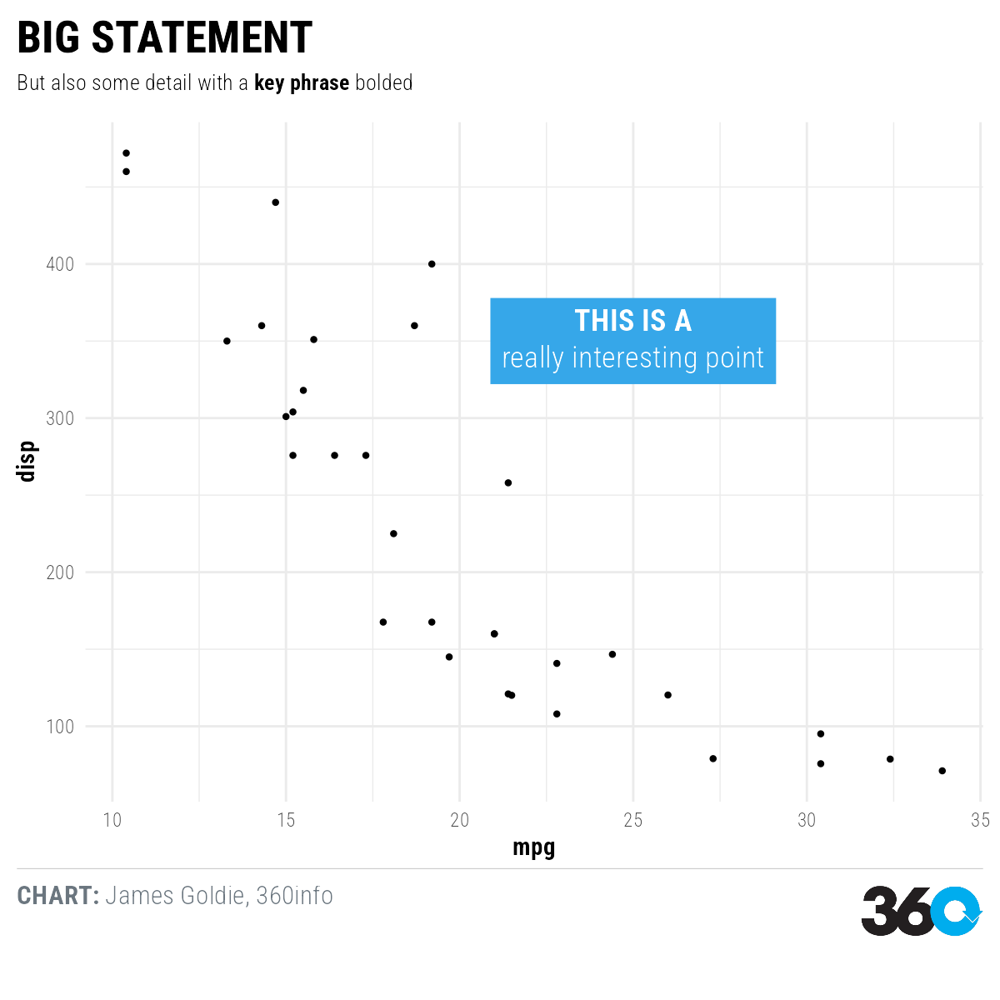

Installation
Install the package from GitHub with the remotes or devtools packages:
remotes::install_github("360-info/themes360info")Use
To create plots in our style:
- Add
themes360info::theme_360to your ggplot2 plot; - Add our fonts to other elements, like annotations or additional theme customisations (see the “Working with fonts” article);
- Get brand colours using
themes360info::colours_360; - Add text annotations to plots with
themes360info::annotate_360and other helpers; - Save the plot, adding a footer with the 360 logo, using
themes360info::save_360plot
library(ggplot2)
library(themes360info)
myplot <- ggplot(mtcars) +
aes(mpg, disp) +
geom_point() +
annotate_360_lightblue(x = 25, y = 350,
label = "**THIS IS A**<br>really interesting point") +
theme_360() +
labs(
title = "BIG STATEMENT",
subtitle = "But also some detail with a **key phrase** bolded",
caption = "**CHART:** James Goldie, 360info")
save_360plot(myplot, "man/figures/README-demo.png")
knitr::include_graphics("man/figures/README-demo.png")
Help
Please feel free to get in touch if you have problems with the package or would like to suggest new features.